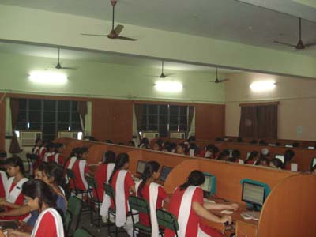

IT Labs
AT HOME WITH COMPUTER
Every day, a number of Notre Dame Students can be seen making their way to the top floor of the three-storied school building which houses a remarkable invention of humankind- the computer. In this well developed, equipped and air-conditioned lab which houses more than sixty computers, the students find a place to apply their theoretical knowledge to the actual technical know-how.
A glorious device which can perform a variety of functions, including computing, designing, analysis, procuring information and several more, the students, through this haven, command a variety of practical skills, and even go on to select the field as their career.
Be it the practice sessions of Flash, or the code-writing sessions of Java, HTML or XML or the informative skills of Open Office, the students inculcate in themselves abilities which are a necessity in today’s world of IT. To enhance the experience of the marvellous virtual world, we have skilled and knowledgeable teachers- Mrs. Kalpana Sinha, Mrs. Rajiv Kathuria, Mrs. Namita Hora and Mrs. Manika Choudhary, who with their expertise lead the students through this complex yet splendid world.
Computer Science, taught from class III to VIII, FIT from IX to X, and IP in the plus-two level, take the aid of this magnificent lab to complement and complete their awareness.
The lab also adds to its splendor the smart class boards in each and every classroom of the premise, while the school also provides smart class boards in each and every classroom. [The computerized data and record keeping give a sense of clear awareness which is prevalent in the school.